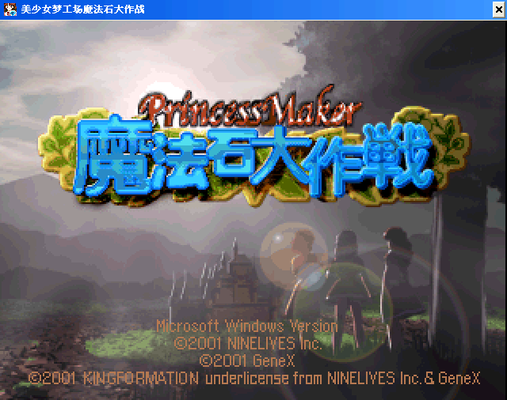
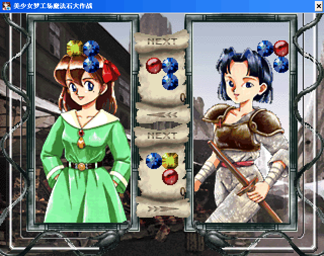

名稱：美少女夢工場／美少女夢工廠：魔法石大作戰 (Pocket Princess／Princess Maker Pocket Daisakusen，中文版)
簡介：GeneX 1998年出品的類俄羅斯方塊遊戲，由Ninelives代理發行，為美少女夢工廠系列
的衍生作品。2001年移植至Windows，2002年由精訊中文化並代理發行 [待補]。


備註：本版為簡中版，缺繁中版光碟
保護：無
說明：
1.任四個同顏色珠子連在一起即可消去（不限定直線）。
2.有洞的地方珠子會自動往下掉入（和俄羅斯方塊遊戲不同）